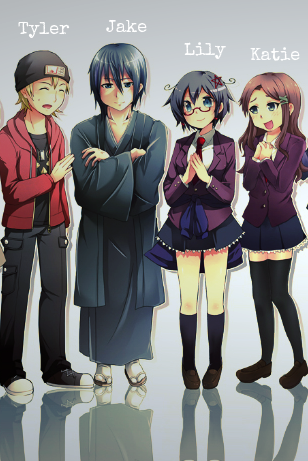
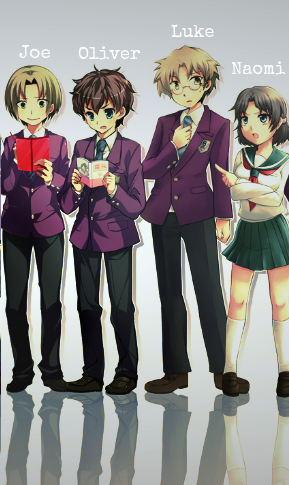
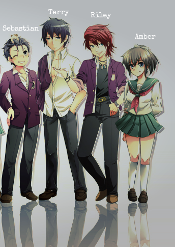
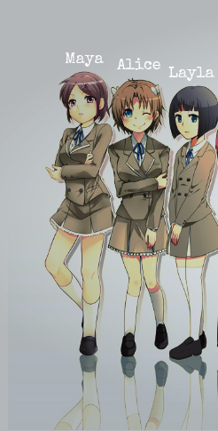

PC
Underwood: a história que você nunca viu...
Underwood: a história que você nunca viu...
10.02.2015
Não foram poucas pessoas que perderam suas vidas na ex adorada escola Underwood, contudo o que poucos sabem é que nem todos que entraram na escola eram da cidade ou sabiam da história verdadeira...
Até onde você iria por uma aventura?
A equipe paranormal
A equipe paranormal de Fell Churc’s, formada pelo líder da equipe Jake, o cineasta Tyler, a aluna de ensino médio Lily e sua melhor amiga Katie. O pequeno grupo foi atrás dos espíritos agourentos da escola, porém... Nunca mais foram vistos.
 Curiosidade macabra: Apenas Lily sabia o jeito de sair de lá, mas ela não iria permitir ninguém sair até seu amado Jake fosse encontrado. O que ela não sabia era que era tarde de mais para todos eles...
A turma 3B-C
Finalmente os alunos do colégio Wharton estavam de férias e nada melhor do que uma aventura na cidade vizinha Rosewood para tornar tudo mais divertido. Mas os alunos Joe, Oliver, Luke e Naomi acharam que não havia problema em entrar na velha e arruinada Underwood... Ninguém mais ia lá...
Os alunos da turma 3B-C de Wharton, nunca mais foram vistos. Seus corpos jamais foram encontrados, mas dizem que suas mortes foram tão repulsivas que mesmo nossos atuais protagonistas não foram capazes de reconhecer seus sexos...

Quem realmente você é?
Após o desaparecimento da irmã e dos colegas dela, Sebastian e seus dois melhores amigos e a namorada de um deles decidem ir onde Naomi e os outros foram vistos pela última vez. Porém Sebastian, Riley e Amber não conheciam a verdadeira natureza de Terry... Terry nunca disse a ninguém que gostava da maneira como as pessoas se “machucavam” perto dele... Bem, você realmente nunca conhece bem as pessoas.

Amizade além da morte
Todo mundo tem pelo menos um amigo que faria tudo por você(caso não tenha, trate te arranjar um logo. ). Maya, Alice e Layla não sabiam que aquela brincadeira de escola iria levá-las para a Underwood e muito menos que no meio do caminho iriam se perder uma da outra.
Apesar de serem melhores amigas, Maya sempre invejou Alice que sempre gostou mais da companhia de Layla que sempre foi o ponto de ligação entre as três, mas podia se dizer que eram três melhores amigas perdidas dentro de um conto de horror.Layla sabia que alguém acabaria pra trás...
Quem você deixaria?
